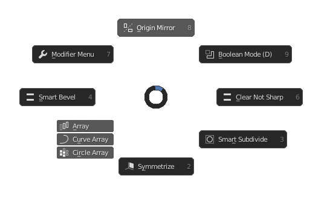
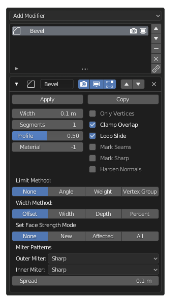

Modifier Menu
Hotkey: Ctrl+X
Functions / Table of Contents
- Origin Mirror
- Boolean Mode (D)
- Clear Not Sharp
- Smart Subdivide
- Symmetrize
- Circle Array
- Curve Array
- Array
- Smart Bevel
- Modifier Menu
Origin Mirror
Moves the origin of the selected object to the 3D Cursor, then the popup appears. All settings for the mirror modifier besides bisect, flip, UV offset and merge limit are available in the popup with hotkeys. Once you click or press enter the settings are confirmed and the popup disappears.
Also see: Blender Manual
Boolean Mode (D)
Enters the destructive boolean mode. It temporarily removes all modifiers from the selected object and creates a duplicate backup. This allows you to create and apply booleans on the selected objects without interference from other modifiers. Whilst in boolean mode, the function changes to exit boolean mode in the pie menu. Activating this will then add all the previous modifiers back onto the object.
Also see: Blender Manual
Clear Not Sharp
Analyses the selected mesh for edges that are marked as sharp but do not meet the required face angles to be considered sharp. If they do not meet requirements, those edges are no longer marked sharp, then all non-sharp edges have their bevel weight removed. This function is to clean up models when they have been edited after adding a bevel modifier, and some parts of the mesh are no longer sharp.
Also see: Blender Manual
Smart Subdivide
This function operates similarly to the Smart Bevel function. This function, however, is for a Subdivision Surface workflow rather than the non-subdivision workflow smart bevel was built for. The function adds a bevel and subdivision surface modifier to create a subdivided mesh with hard edges. This function is best used for a hard surface model that requires subdivision. The popup will not allow you to edit any of the bevel settings except the width and clamp overlap toggle, this is because the other settings need to be set automatically for best results. Subdivision setting such as levels (viewport, render and quality level settings can be switched between), the optimal display toggle and the use creases toggle. If a bevel is already on the selected object, a new one will be added, but if a subdivision is already on the object, the existing modifier will be used.
Also see: Blender Manual
Symmetrize
This function does exactly what blender's default symmetrize function does, however, the popup allow you to select the axis in real time and symmetrize on multiple axes at once.
Also see: Blender Manual
Circle Array
Functions similarly to the Array function, however this allows you to use an object as the array's origin. This means the array becomes radial around the object chosen as the origin. In one function you can form a circle of objects very quickly.
Also see: Blender Manual
Curve Array
Functions exactly like the Array function, however this allows you to use a curve to which the object being arrayed is constrained to. A curve modifier is automatically added to the array object to
Also see: Blender Manual
Array
Adds an array modifier with real-time adjustable parameters. Relative offset is controlled by mouse movement, the x, y and z keys can be pressed to selected which axis to adjust, pressing the shift key and then x, y or z will lock all other offsets to zero and only adjust the selected axis. The array count can be adjusted with the scroll wheel. The popup allows you to add and remove array modifiers, and the name of the current array modifier you are editing is displayed in the popup.
Also see: Blender Manual
Smart Bevel
Adds a bevel with adjustable parameters. Bevel width can be adjusted with mouse movement, the scroll wheel controls the segment count on bevelled edges. The mouse movement can toggle between adjusting the edge width or the profile of the bevel. The clamp overlap, limit type, offset type and vertex mode can be toggled. The popup allows you to add multiple bevels on one object, or remove bevel modifiers on the object.
Also see: Blender Manual
Modifier Menu
Allows for modifiers to be added, removed, edited and arranged in a simple popup rather than in the properties editor. Modifiers attached to the selected object are displayed in a list and can be moved up or down. The list functions allow you to remove the selected modifier, remove all modifiers and apply all modifiers. The modifiers can be hidden from view or from render in the list also.